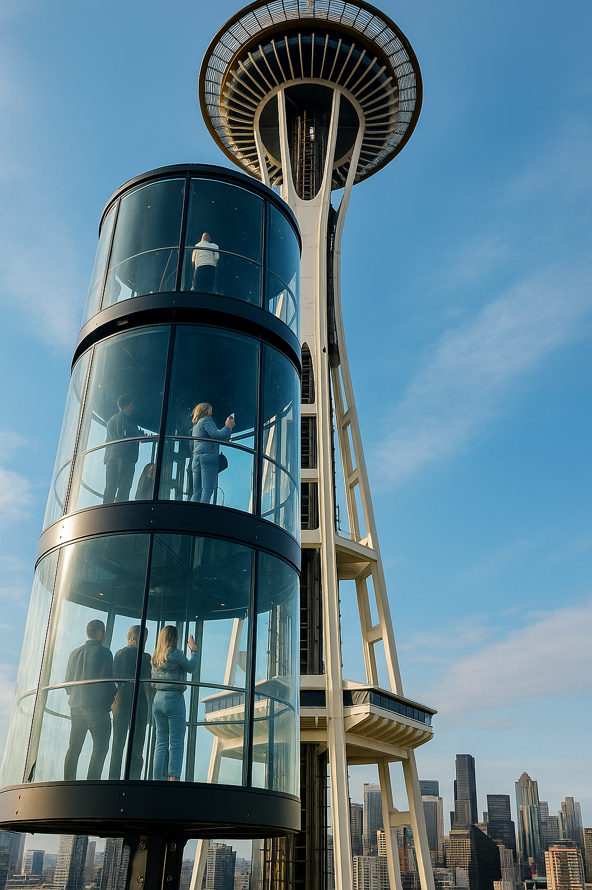

Seattle’s Space Needle Just Got an All-Glass Outdoor Elevator — And It’s a Thrill
The Pacific Northwest has a new reason to look up. On May 24, just in time for Memorial Day weekend, Seattle’s legendary Space Needle unveiled its newest feature: a jaw-dropping all-glass outdoor elevator, the first of its kind in the United States. For travelers with a taste for height and design, this is not just an upgrade — it’s a destination in itself.
A New Way to Ascend the Skyline
Dubbed “The Lift,” this dual-level elevator is entirely transparent — floors, walls, and ceiling — and it scales the Space Needle’s outer structure in under 45 seconds. Designed by the same architectural team that led the 2018 renovation of the landmark, the elevator adds a cinematic twist to the 605-foot ascent.
“It’s like floating through the Seattle skyline,” said an opening-day visitor. “You don’t just ride it — you feel it.”
Each deck fits up to 15 passengers, and the lift operates in tandem with the original internal elevators. Guests can now choose between the classic glass view inside or the open-air sensation of the new outdoor capsule — which tilts slightly as it climbs, amplifying the thrill factor.
Design That Makes You Look Twice
The elevator isn’t just functional — it’s photogenic. Created using aerospace-grade glass and a system of carbon-fiber joints, the capsule reflects Seattle’s obsession with modern minimalism and forward-thinking design. At night, LED accents illuminate its climb in shimmering gradients, turning every ride into a spectacle.
The design also pays homage to the city’s roots. A thin metal trace running along the capsule’s seams is etched with the coordinates of historic Seattle neighborhoods — a subtle detail that blends heritage with innovation.
Experience It This Summer
The elevator is now open to all visitors holding regular admission tickets, with no additional cost for the ride. The attraction is expected to draw massive crowds throughout the summer, especially for sunset and nighttime sessions. Advance reservations are highly recommended — and if you’re into content creation, this elevator was practically built for Reels and drone shots.
“The new Space Needle lift is a love letter to the city — bold, transparent, and always reaching up.”
Why It Matters
Seattle has long been a hub for design-driven travel — from the Chihuly Garden to the MoPOP’s fluid architecture — and this new addition further cements the city’s status as a style-forward destination. It’s not just for the thrill-seekers; it’s for lovers of architecture, movement, and modern urban storytelling.
Whether you’re a first-time visitor or a lifelong Seattleite, The Lift offers something rare: a new perspective on a city that’s constantly reinventing itself. And that’s what travel — and style — are all about.
Words by Style Atlas